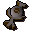
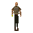
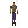
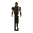
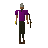
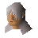

Earth talisman

| Config name | earth_talisman |
| Item id | 1440 |
| Value | 4 gp |
| Weight | 15g |
| Members | No |
| Tradeable | Yes |
| Stackable | No |
| Options | Locate |
| Category | talismans |
| Defined in | scripts/skill_runecraft/configs/runecraft.obj |
Earth talisman
A mysterious power emanates from the talisman...
Dropped by
| NPC | Level | Quantity | Rarity | Via | Notes |
|---|---|---|---|---|---|
| 2 | 1 | 1/64 (1.56%) | |||
| 2 | 1 | 1/64 (1.56%) | |||
| 2 | 1 | 1/64 (1.56%) | |||
| 2 | 1 | 1/64 (1.56%) | |||
| 2 | 1 | 1/64 (1.56%) | |||
| 2 | 1 | 1/64 (1.56%) | |||
| 7 | 1 | 1/64 (1.56%) | |||
| 16 | 1 | 1/64 (1.56%) | |||
 Rogue | 15 | 1 | 1/64 (1.56%) | ||
 Thief | 14 | 1 | 1/64 (1.56%) | ||
 Man | 2 | 1 | 1/64 (1.56%) | ||
 Al-Kharid warrior | 9 | 1 | 1/64 (1.56%) | ||
| Breoca | 5 | 1 | 1/64 (1.56%) | ||
| Ocga | 5 | 1 | 1/64 (1.56%) | ||
| Unferth | 6 | 1 | 1/64 (1.56%) | ||
 Penda | 5 | 1 | 1/64 (1.56%) | ||
| Hygd | 4 | 1 | 1/64 (1.56%) | ||
| Ceolburg | 4 | 1 | 1/64 (1.56%) | ||
| 4 | 1 | 1/64 (1.56%) |
Quests
Runecrafting
Earth altar: level 9, 65 xp per essence. Crafts  Earth rune using Earth talisman.
Earth rune using Earth talisman.
Altar at 3306, 3474 (view altar); mysterious ruins at 3303, 3477 (view ruins)
Referenced in scripts
scripts/_test/scripts/cheats/cheat_bank.rs2scripts/areas/area_burthorpe/scripts/death_guard.rs2scripts/drop tables/scripts/farmer.rs2scripts/drop tables/scripts/man.rs2scripts/drop tables/scripts/rogue.rs2scripts/quests/quest_death/scripts/death_archer.rs2